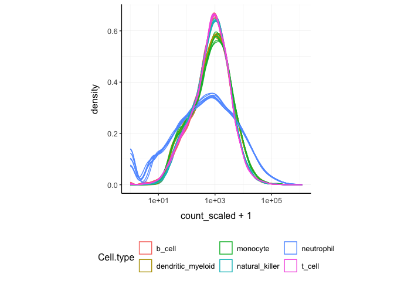
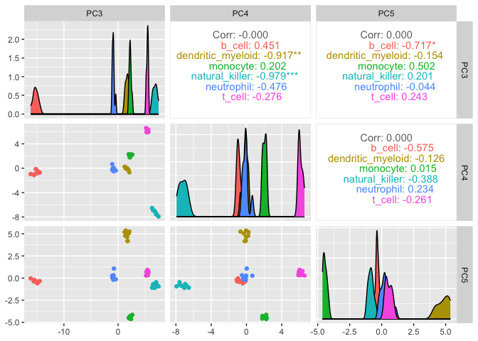

Brings transcriptomics to the tidyverse!
The code is released under the version 3 of the GNU General Public License.
website: stemangiola.github.io/tidybulk/
Please have a look also to
- tidySummarizedExperiment for bulk data tidy representation
- tidySingleCellExperiment for single-cell data tidy representation
- tidyseurat for single-cell data tidy representation
- tidyHeatmap for heatmaps produced with tidy principles analysis and manipulation
- nanny for tidy high-level data analysis and manipulation
- tidygate for adding custom gate information to your tibble

Functions/utilities available
| Function | Description |
|---|---|
aggregate_duplicates |
Aggregate abundance and annotation of duplicated transcripts in a robust way |
identify_abundant keep_abundant
|
identify or keep the abundant genes |
keep_variable |
Filter for top variable features |
scale_abundance |
Scale (normalise) abundance for RNA sequencing depth |
reduce_dimensions |
Perform dimensionality reduction (PCA, MDS, tSNE, UMAP) |
cluster_elements |
Labels elements with cluster identity (kmeans, SNN) |
remove_redundancy |
Filter out elements with highly correlated features |
adjust_abundance |
Remove known unwanted variation (Combat) |
test_differential_abundance |
Differential transcript abundance testing (DESeq2, edgeR, voom) |
deconvolve_cellularity |
Estimated tissue composition (Cibersort, llsr, epic, xCell, mcp_counter, quantiseq |
test_differential_cellularity |
Differential cell-type abundance testing |
test_stratification_cellularity |
Estimate Kaplan-Meier survival differences |
test_gene_enrichment |
Gene enrichment analyses (EGSEA) |
test_gene_overrepresentation |
Gene enrichment on list of transcript names (no rank) |
test_gene_rank |
Gene enrichment on list of transcript (GSEA) |
impute_missing_abundance |
Impute abundance for missing data points using sample groupings |
| Utilities | Description |
|---|---|
get_bibliography |
Get the bibliography of your workflow |
tidybulk |
add tidybulk attributes to a tibble object |
tidybulk_SAM_BAM |
Convert SAM BAM files into tidybulk tibble |
pivot_sample |
Select sample-wise columns/information |
pivot_transcript |
Select transcript-wise columns/information |
rotate_dimensions |
Rotate two dimensions of a degree |
ensembl_to_symbol |
Add gene symbol from ensembl IDs |
symbol_to_entrez |
Add entrez ID from gene symbol |
describe_transcript |
Add gene description from gene symbol |
All functions are directly compatibble with SummarizedExperiment object.
Installation
From Bioconductor
BiocManager::install("tidybulk")From Github
devtools::install_github("stemangiola/tidybulk")Data
We will use a SummarizedExperiment object
counts_SE## # A tibble abstraction: 408,624 x 8
## transcript sample count Cell.type time condition batch factor_of_intere…
## <chr> <chr> <dbl> <fct> <fct> <lgl> <fct> <lgl>
## 1 A1BG SRR1740034 153 b_cell 0 d TRUE 0 TRUE
## 2 A1BG-AS1 SRR1740034 83 b_cell 0 d TRUE 0 TRUE
## 3 AAAS SRR1740034 868 b_cell 0 d TRUE 0 TRUE
## 4 AACS SRR1740034 222 b_cell 0 d TRUE 0 TRUE
## 5 AAGAB SRR1740034 590 b_cell 0 d TRUE 0 TRUE
## 6 AAMDC SRR1740034 48 b_cell 0 d TRUE 0 TRUE
## 7 AAMP SRR1740034 1257 b_cell 0 d TRUE 0 TRUE
## 8 AANAT SRR1740034 284 b_cell 0 d TRUE 0 TRUE
## 9 AAR2 SRR1740034 379 b_cell 0 d TRUE 0 TRUE
## 10 AARS2 SRR1740034 685 b_cell 0 d TRUE 0 TRUE
## # … with 40 more rowsLoading tidySummarizedExperiment will automatically abstract this object as tibble, so we can display it and manipulate it with tidy tools. Although it looks different, and more tools (tidyverse) are available to us, this object is in fact a SummarizedExperiment object.
class(counts_SE)## [1] "SummarizedExperiment"
## attr(,"package")
## [1] "SummarizedExperiment"Get the bibliography of your workflow
First of all, you can cite all articles utilised within your workflow automatically from any tidybulk tibble
counts_SE %>% get_bibliography()Aggregate duplicated transcripts
tidybulk provide the aggregate_duplicates function to aggregate duplicated transcripts (e.g., isoforms, ensembl). For example, we often have to convert ensembl symbols to gene/transcript symbol, but in doing so we have to deal with duplicates. aggregate_duplicates takes a tibble and column names (as symbols; for sample, transcript and count) as arguments and returns a tibble with transcripts with the same name aggregated. All the rest of the columns are appended, and factors and boolean are appended as characters.
TidyTranscriptomics
counts_SE.aggr = counts_SE %>% aggregate_duplicates()Standard procedure (comparative purpose)
Scale counts
We may want to compensate for sequencing depth, scaling the transcript abundance (e.g., with TMM algorithm, Robinson and Oshlack doi.org/10.1186/gb-2010-11-3-r25). scale_abundance takes a tibble, column names (as symbols; for sample, transcript and count) and a method as arguments and returns a tibble with additional columns with scaled data as <NAME OF COUNT COLUMN>_scaled.
TidyTranscriptomics
counts_SE.norm = counts_SE.aggr %>% identify_abundant(factor_of_interest = condition) %>% scale_abundance()Standard procedure (comparative purpose)
library(edgeR)
dgList <- DGEList(count_m=x,group=group)
keep <- filterByExpr(dgList)
dgList <- dgList[keep,,keep.lib.sizes=FALSE]
[...]
dgList <- calcNormFactors(dgList, method="TMM")
norm_counts.table <- cpm(dgList)We can easily plot the scaled density to check the scaling outcome. On the x axis we have the log scaled counts, on the y axes we have the density, data is grouped by sample and coloured by cell type.
counts_SE.norm %>%
ggplot(aes(count_scaled + 1, group=sample, color=`Cell.type`)) +
geom_density() +
scale_x_log10() +
my_theme
Filter variable transcripts
We may want to identify and filter variable transcripts.
TidyTranscriptomics
counts_SE.norm.variable = counts_SE.norm %>% keep_variable()Standard procedure (comparative purpose)
Reduce dimensions
We may want to reduce the dimensions of our data, for example using PCA or MDS algorithms. reduce_dimensions takes a tibble, column names (as symbols; for sample, transcript and count) and a method (e.g., MDS or PCA) as arguments and returns a tibble with additional columns for the reduced dimensions.
MDS (Robinson et al., 10.1093/bioinformatics/btp616)
TidyTranscriptomics
counts_SE.norm.MDS =
counts_SE.norm %>%
reduce_dimensions(method="MDS", .dims = 6)Standard procedure (comparative purpose)
On the x and y axes axis we have the reduced dimensions 1 to 3, data is coloured by cell type.
counts_SE.norm.MDS %>% pivot_sample() %>% select(contains("Dim"), everything())## # A tibble: 48 x 15
## Dim1 Dim2 Dim3 Dim4 Dim5 Dim6 sample Cell.type time
## <dbl> <dbl> <dbl> <dbl> <dbl> <dbl> <chr> <chr> <chr>
## 1 -1.46 0.220 -1.68 -0.0553 0.0658 -0.126 SRR17… b_cell 0 d
## 2 -1.46 0.226 -1.71 -0.0300 0.0454 -0.137 SRR17… b_cell 1 d
## 3 -1.44 0.193 -1.60 -0.0890 0.0503 -0.121 SRR17… b_cell 3 d
## 4 -1.44 0.198 -1.67 -0.0891 0.0543 -0.110 SRR17… b_cell 7 d
## 5 0.243 -1.42 0.182 -0.00642 -0.503 -0.131 SRR17… dendriti… 0 d
## 6 0.191 -1.42 0.195 -0.0180 -0.457 -0.130 SRR17… dendriti… 1 d
## 7 0.257 -1.42 0.152 -0.0130 -0.582 -0.0927 SRR17… dendriti… 3 d
## 8 0.162 -1.43 0.189 -0.0232 -0.452 -0.109 SRR17… dendriti… 7 d
## 9 0.516 -1.47 0.240 0.251 0.457 -0.119 SRR17… monocyte 0 d
## 10 0.514 -1.41 0.231 0.219 0.458 -0.131 SRR17… monocyte 1 d
## # … with 38 more rows, and 6 more variables: condition <chr>, batch <chr>,
## # factor_of_interest <chr>, merged.transcripts <dbl>, TMM <dbl>,
## # multiplier <dbl>
counts_SE.norm.MDS %>%
pivot_sample() %>%
GGally::ggpairs(columns = 10:15, ggplot2::aes(colour=`Cell.type`))
PCA
TidyTranscriptomics
counts_SE.norm.PCA =
counts_SE.norm %>%
reduce_dimensions(method="PCA", .dims = 6)Standard procedure (comparative purpose)
On the x and y axes axis we have the reduced dimensions 1 to 3, data is coloured by cell type.
counts_SE.norm.PCA %>% pivot_sample() %>% select(contains("PC"), everything())## # A tibble: 48 x 16
## PC1 PC2 PC3 PC4 PC5 PC6 sample Cell.type time condition
## <dbl> <dbl> <dbl> <dbl> <dbl> <dbl> <chr> <chr> <chr> <chr>
## 1 -32.7 -4.93 -37.5 -1.24 -1.47 -2.81 SRR17… b_cell 0 d TRUE
## 2 -32.7 -5.05 -38.1 -0.672 -1.02 -3.06 SRR17… b_cell 1 d TRUE
## 3 -32.2 -4.32 -35.8 -1.99 -1.12 -2.70 SRR17… b_cell 3 d TRUE
## 4 -32.3 -4.43 -37.3 -1.99 -1.21 -2.45 SRR17… b_cell 7 d TRUE
## 5 5.44 31.8 4.08 -0.144 11.3 -2.94 SRR17… dendriti… 0 d FALSE
## 6 4.28 31.7 4.35 -0.403 10.2 -2.91 SRR17… dendriti… 1 d FALSE
## 7 5.74 31.7 3.40 -0.290 13.0 -2.07 SRR17… dendriti… 3 d FALSE
## 8 3.62 32.1 4.23 -0.519 10.1 -2.43 SRR17… dendriti… 7 d FALSE
## 9 11.5 32.8 5.37 5.60 -10.2 -2.66 SRR17… monocyte 0 d FALSE
## 10 11.5 31.6 5.16 4.90 -10.2 -2.92 SRR17… monocyte 1 d FALSE
## # … with 38 more rows, and 6 more variables: batch <chr>,
## # factor_of_interest <chr>, merged.transcripts <dbl>, TMM <dbl>,
## # multiplier <dbl>, sample.x <chr>
counts_SE.norm.PCA %>%
pivot_sample() %>%
GGally::ggpairs(columns = 11:13, ggplot2::aes(colour=`Cell.type`))
tSNE
TidyTranscriptomics
counts_SE.norm.tSNE =
breast_tcga_mini_SE %>%
identify_abundant() %>%
reduce_dimensions(
method = "tSNE",
perplexity=10,
pca_scale =TRUE
)Standard procedure (comparative purpose)
Plot
counts_SE.norm.tSNE %>%
pivot_sample() %>%
select(contains("tSNE"), everything()) ## # A tibble: 251 x 5
## tSNE1 tSNE2 sample Call sample.x
## <dbl> <dbl> <chr> <fct> <chr>
## 1 0.0536 10.8 TCGA-A1-A0SD-01A-11R-A115-… LumA TCGA-A1-A0SD-01A-11R-A115-…
## 2 7.00 -3.58 TCGA-A1-A0SF-01A-11R-A144-… LumA TCGA-A1-A0SF-01A-11R-A144-…
## 3 -4.30 18.1 TCGA-A1-A0SG-01A-11R-A144-… LumA TCGA-A1-A0SG-01A-11R-A144-…
## 4 -6.36 2.24 TCGA-A1-A0SH-01A-11R-A084-… LumA TCGA-A1-A0SH-01A-11R-A084-…
## 5 -9.99 2.99 TCGA-A1-A0SI-01A-11R-A144-… LumB TCGA-A1-A0SI-01A-11R-A144-…
## 6 0.273 -8.08 TCGA-A1-A0SJ-01A-11R-A084-… LumA TCGA-A1-A0SJ-01A-11R-A084-…
## 7 6.94 -27.9 TCGA-A1-A0SK-01A-12R-A084-… Basal TCGA-A1-A0SK-01A-12R-A084-…
## 8 -11.8 -5.48 TCGA-A1-A0SM-01A-11R-A084-… LumA TCGA-A1-A0SM-01A-11R-A084-…
## 9 -10.1 -4.96 TCGA-A1-A0SN-01A-11R-A144-… LumB TCGA-A1-A0SN-01A-11R-A144-…
## 10 -3.44 26.5 TCGA-A1-A0SQ-01A-21R-A144-… LumA TCGA-A1-A0SQ-01A-21R-A144-…
## # … with 241 more rows
counts_SE.norm.tSNE %>%
pivot_sample() %>%
ggplot(aes(x = `tSNE1`, y = `tSNE2`, color=Call)) + geom_point() + my_theme
Rotate dimensions
We may want to rotate the reduced dimensions (or any two numeric columns really) of our data, of a set angle. rotate_dimensions takes a tibble, column names (as symbols; for sample, transcript and count) and an angle as arguments and returns a tibble with additional columns for the rotated dimensions. The rotated dimensions will be added to the original data set as <NAME OF DIMENSION> rotated <ANGLE> by default, or as specified in the input arguments.
TidyTranscriptomics
counts_SE.norm.MDS.rotated =
counts_SE.norm.MDS %>%
rotate_dimensions(`Dim1`, `Dim2`, rotation_degrees = 45, action="get")Standard procedure (comparative purpose)
Original On the x and y axes axis we have the first two reduced dimensions, data is coloured by cell type.
counts_SE.norm.MDS.rotated %>%
ggplot(aes(x=`Dim1`, y=`Dim2`, color=`Cell.type` )) +
geom_point() +
my_theme
Rotated On the x and y axes axis we have the first two reduced dimensions rotated of 45 degrees, data is coloured by cell type.
counts_SE.norm.MDS.rotated %>%
pivot_sample() %>%
ggplot(aes(x=`Dim1_rotated_45`, y=`Dim2_rotated_45`, color=`Cell.type` )) +
geom_point() +
my_theme
Test differential abundance
We may want to test for differential transcription between sample-wise factors of interest (e.g., with edgeR). test_differential_abundance takes a tibble, column names (as symbols; for sample, transcript and count) and a formula representing the desired linear model as arguments and returns a tibble with additional columns for the statistics from the hypothesis test (e.g., log fold change, p-value and false discovery rate).
TidyTranscriptomics
counts_SE.de =
counts_SE %>%
test_differential_abundance( ~ condition, action="get")
counts_SE.deStandard procedure (comparative purpose)
library(edgeR)
dgList <- DGEList(counts=counts_m,group=group)
keep <- filterByExpr(dgList)
dgList <- dgList[keep,,keep.lib.sizes=FALSE]
dgList <- calcNormFactors(dgList)
design <- model.matrix(~group)
dgList <- estimateDisp(dgList,design)
fit <- glmQLFit(dgList,design)
qlf <- glmQLFTest(fit,coef=2)
topTags(qlf, n=Inf)The functon test_differential_abundance operated with contrasts too. The constrasts hve the name of the design matrix (generally
counts_SE.de =
counts_SE %>%
identify_abundant(factor_of_interest = condition) %>%
test_differential_abundance(
~ 0 + condition,
.contrasts = c( "conditionTRUE - conditionFALSE"),
action="get"
)Adjust counts
We may want to adjust counts for (known) unwanted variation. adjust_abundance takes as arguments a tibble, column names (as symbols; for sample, transcript and count) and a formula representing the desired linear model where the first covariate is the factor of interest and the second covariate is the unwanted variation, and returns a tibble with additional columns for the adjusted counts as <COUNT COLUMN>_adjusted. At the moment just an unwanted covariated is allowed at a time.
TidyTranscriptomics
counts_SE.norm.adj =
counts_SE.norm %>% adjust_abundance( ~ factor_of_interest + batch)Standard procedure (comparative purpose)
library(sva)
count_m_log = log(count_m + 1)
design =
model.matrix(
object = ~ factor_of_interest + batch,
data = annotation
)
count_m_log.sva =
ComBat(
batch = design[,2],
mod = design,
...
)
count_m_log.sva = ceiling(exp(count_m_log.sva) -1)
count_m_log.sva$cell_type = counts[
match(counts$sample, rownames(count_m_log.sva)),
"Cell.type"
]Deconvolve Cell type composition
We may want to infer the cell type composition of our samples (with the algorithm Cibersort; Newman et al., 10.1038/nmeth.3337). deconvolve_cellularity takes as arguments a tibble, column names (as symbols; for sample, transcript and count) and returns a tibble with additional columns for the adjusted cell type proportions.
TidyTranscriptomics
counts_SE.cibersort =
counts_SE %>%
deconvolve_cellularity(action="get", cores=1, prefix = "cibersort__") Standard procedure (comparative purpose)
source(‘CIBERSORT.R’)
count_m %>% write.table("mixture_file.txt")
results <- CIBERSORT(
"sig_matrix_file.txt",
"mixture_file.txt",
perm=100, QN=TRUE
)
results$cell_type = tibble_counts[
match(tibble_counts$sample, rownames(results)),
"Cell.type"
]With the new annotated data frame, we can plot the distributions of cell types across samples, and compare them with the nominal cell type labels to check for the purity of isolation. On the x axis we have the cell types inferred by Cibersort, on the y axis we have the inferred proportions. The data is facetted and coloured by nominal cell types (annotation given by the researcher after FACS sorting).
counts_SE.cibersort %>%
pivot_longer(
names_to= "Cell_type_inferred",
values_to = "proportion",
names_prefix ="cibersort__",
cols=contains("cibersort__")
) %>%
ggplot(aes(x=`Cell_type_inferred`, y=proportion, fill=`Cell.type`)) +
geom_boxplot() +
facet_wrap(~`Cell.type`) +
my_theme +
theme(axis.text.x = element_text(angle = 90, hjust = 1, vjust = 0.5), aspect.ratio=1/5)
Test differential cell-type abundance
We can also perform a statistical test on the differential cell-type abundance across conditions
counts_SE %>%
test_differential_cellularity(. ~ condition )## # A tibble: 22 x 7
## .cell_type cell_type_propo… `estimate_(Inte… estimate_condit…
## <chr> <list> <dbl> <dbl>
## 1 cibersort… <tibble [48 × 8… -2.97 2.33
## 2 cibersort… <tibble [48 × 8… -4.79 1.86
## 3 cibersort… <tibble [48 × 8… -5.44 -0.503
## 4 cibersort… <tibble [48 × 8… -2.28 0.883
## 5 cibersort… <tibble [48 × 8… -2.79 -0.637
## 6 cibersort… <tibble [48 × 8… -2.60 0.320
## 7 cibersort… <tibble [48 × 8… -3.72 2.14
## 8 cibersort… <tibble [48 × 8… -5.20 -0.251
## 9 cibersort… <tibble [48 × 8… -4.80 1.75
## 10 cibersort… <tibble [48 × 8… -5.34 -0.219
## # … with 12 more rows, and 3 more variables: std.error_conditionTRUE <dbl>,
## # statistic_conditionTRUE <dbl>, p.value_conditionTRUE <dbl>We can also perform regression analysis with censored data (coxph).
# Add survival data
counts_SE_survival =
counts_SE %>%
nest(data = -sample) %>%
mutate(
days = sample(1:1000, size = n()),
dead = sample(c(0,1), size = n(), replace = TRUE)
) %>%
unnest(data)
# Test
counts_SE_survival %>%
test_differential_cellularity(survival::Surv(days, dead) ~ .)## # A tibble: 22 x 6
## .cell_type cell_type_proport… estimate std.error statistic p.value
## <chr> <list> <dbl> <dbl> <dbl> <dbl>
## 1 cibersort.B.cells.na… <tibble [48 × 9]> 2.05 0.568 3.61 3.03e-4
## 2 cibersort.B.cells.me… <tibble [48 × 9]> 0.721 0.303 2.38 1.72e-2
## 3 cibersort.Plasma.cel… <tibble [48 × 9]> -0.954 0.504 -1.89 5.83e-2
## 4 cibersort.T.cells.CD8 <tibble [48 × 9]> 0.496 0.783 0.633 5.27e-1
## 5 cibersort.T.cells.CD… <tibble [48 × 9]> 1.19 0.468 2.54 1.12e-2
## 6 cibersort.T.cells.CD… <tibble [48 × 9]> 0.506 0.500 1.01 3.11e-1
## 7 cibersort.T.cells.CD… <tibble [48 × 9]> -0.156 0.416 -0.374 7.09e-1
## 8 cibersort.T.cells.fo… <tibble [48 × 9]> 1.60 0.614 2.60 9.33e-3
## 9 cibersort.T.cells.re… <tibble [48 × 9]> 0.183 0.405 0.451 6.52e-1
## 10 cibersort.T.cells.ga… <tibble [48 × 9]> 1.01 0.955 1.05 2.92e-1
## # … with 12 more rowsWe can also perform test of Kaplan-Meier curves.
counts_stratified =
counts_SE_survival %>%
# Test
test_stratification_cellularity(
survival::Surv(days, dead) ~ .,
sample, transcript, count
)
counts_stratified## # A tibble: 22 x 6
## .cell_type cell_type_propor… .low_cellularit… .high_cellulari… pvalue plot
## <chr> <list> <dbl> <dbl> <dbl> <lis>
## 1 cibersort.B… <tibble [48 × 9]> 14.9 13.1 0.245 <ggs…
## 2 cibersort.B… <tibble [48 × 9]> 20.9 7.07 0.178 <ggs…
## 3 cibersort.P… <tibble [48 × 9]> 13.8 14.2 0.210 <ggs…
## 4 cibersort.T… <tibble [48 × 9]> 12.5 15.5 0.554 <ggs…
## 5 cibersort.T… <tibble [48 × 9]> 13.8 14.2 0.931 <ggs…
## 6 cibersort.T… <tibble [48 × 9]> 12.5 15.5 0.327 <ggs…
## 7 cibersort.T… <tibble [48 × 9]> 12.9 15.1 0.417 <ggs…
## 8 cibersort.T… <tibble [48 × 9]> 21.5 6.53 0.828 <ggs…
## 9 cibersort.T… <tibble [48 × 9]> 14.6 13.4 0.312 <ggs…
## 10 cibersort.T… <tibble [48 × 9]> 25.3 2.73 0.399 <ggs…
## # … with 12 more rowsPlot Kaplan-Meier curves
counts_stratified$plot[[1]]
Cluster samples
We may want to cluster our data (e.g., using k-means sample-wise). cluster_elements takes as arguments a tibble, column names (as symbols; for sample, transcript and count) and returns a tibble with additional columns for the cluster annotation. At the moment only k-means clustering is supported, the plan is to introduce more clustering methods.
k-means
TidyTranscriptomics
counts_SE.norm.cluster = counts_SE.norm.MDS %>%
cluster_elements(method="kmeans", centers = 2, action="get" )Standard procedure (comparative purpose)
We can add cluster annotation to the MDS dimension reduced data set and plot.
counts_SE.norm.cluster %>%
ggplot(aes(x=`Dim1`, y=`Dim2`, color=`cluster_kmeans`)) +
geom_point() +
my_theme
SNN
Matrix package (v1.3-3) causes an error with Seurat::FindNeighbors used in this method. We are trying to solve this issue. At the moment this option in unaviable.
TidyTranscriptomics
counts_SE.norm.SNN =
counts_SE.norm.tSNE %>%
cluster_elements(method = "SNN")Standard procedure (comparative purpose)
library(Seurat)
snn = CreateSeuratObject(count_m)
snn = ScaleData(
snn, display.progress = TRUE,
num.cores=4, do.par = TRUE
)
snn = FindVariableFeatures(snn, selection.method = "vst")
snn = FindVariableFeatures(snn, selection.method = "vst")
snn = RunPCA(snn, npcs = 30)
snn = FindNeighbors(snn)
snn = FindClusters(snn, method = "igraph", ...)
snn = snn[["seurat_clusters"]]
snn$cell_type = tibble_counts[
match(tibble_counts$sample, rownames(snn)),
c("Cell.type", "Dim1", "Dim2")
]
counts_SE.norm.SNN %>%
pivot_sample() %>%
select(contains("tSNE"), everything())
counts_SE.norm.SNN %>%
pivot_sample() %>%
gather(source, Call, c("cluster_SNN", "Call")) %>%
distinct() %>%
ggplot(aes(x = `tSNE1`, y = `tSNE2`, color=Call)) + geom_point() + facet_grid(~source) + my_theme
# Do differential transcription between clusters
counts_SE.norm.SNN %>%
mutate(factor_of_interest = `cluster_SNN` == 3) %>%
test_differential_abundance(
~ factor_of_interest,
action="get"
)Drop redundant transcripts
We may want to remove redundant elements from the original data set (e.g., samples or transcripts), for example if we want to define cell-type specific signatures with low sample redundancy. remove_redundancy takes as arguments a tibble, column names (as symbols; for sample, transcript and count) and returns a tibble with redundant elements removed (e.g., samples). Two redundancy estimation approaches are supported:
- removal of highly correlated clusters of elements (keeping a representative) with method=“correlation”
- removal of most proximal element pairs in a reduced dimensional space.
Approach 1
TidyTranscriptomics
counts_SE.norm.non_redundant =
counts_SE.norm.MDS %>%
remove_redundancy( method = "correlation" )Standard procedure (comparative purpose)
library(widyr)
.data.correlated =
pairwise_cor(
counts,
sample,
transcript,
rc,
sort = TRUE,
diag = FALSE,
upper = FALSE
) %>%
filter(correlation > correlation_threshold) %>%
distinct(item1) %>%
rename(!!.element := item1)
# Return non redudant data frame
counts %>% anti_join(.data.correlated) %>%
spread(sample, rc, - transcript) %>%
left_join(annotation)We can visualise how the reduced redundancy with the reduced dimentions look like
counts_SE.norm.non_redundant %>%
pivot_sample() %>%
ggplot(aes(x=`Dim1`, y=`Dim2`, color=`Cell.type`)) +
geom_point() +
my_theme
Approach 2
counts_SE.norm.non_redundant =
counts_SE.norm.MDS %>%
remove_redundancy(
method = "reduced_dimensions",
Dim_a_column = `Dim1`,
Dim_b_column = `Dim2`
)We can visualise MDS reduced dimensions of the samples with the closest pair removed.
counts_SE.norm.non_redundant %>%
pivot_sample() %>%
ggplot(aes(x=`Dim1`, y=`Dim2`, color=`Cell.type`)) +
geom_point() +
my_theme
Other useful wrappers
The above wrapper streamline the most common processing of bulk RNA sequencing data. Other useful wrappers are listed above.
From BAM/SAM to tibble of gene counts
We can calculate gene counts (using FeatureCounts; Liao Y et al., 10.1093/nar/gkz114) from a list of BAM/SAM files and format them into a tidy structure (similar to counts).
counts = tidybulk_SAM_BAM(
file_names,
genome = "hg38",
isPairedEnd = TRUE,
requireBothEndsMapped = TRUE,
checkFragLength = FALSE,
useMetaFeatures = TRUE
)From ensembl IDs to gene symbol IDs
We can add gene symbols from ensembl identifiers. This is useful since different resources use ensembl IDs while others use gene symbol IDs. This currently works for human and mouse.
counts_ensembl %>% ensembl_to_symbol(ens)## # A tibble: 119 x 8
## ens iso `read count` sample cases_0_project… cases_0_samples… transcript
## <chr> <chr> <dbl> <chr> <chr> <chr> <chr>
## 1 ENSG… 13 144 TARGE… Acute Myeloid L… Primary Blood D… TSPAN6
## 2 ENSG… 13 72 TARGE… Acute Myeloid L… Primary Blood D… TSPAN6
## 3 ENSG… 13 0 TARGE… Acute Myeloid L… Primary Blood D… TSPAN6
## 4 ENSG… 13 1099 TARGE… Acute Myeloid L… Primary Blood D… TSPAN6
## 5 ENSG… 13 11 TARGE… Acute Myeloid L… Primary Blood D… TSPAN6
## 6 ENSG… 13 2 TARGE… Acute Myeloid L… Primary Blood D… TSPAN6
## 7 ENSG… 13 3 TARGE… Acute Myeloid L… Primary Blood D… TSPAN6
## 8 ENSG… 13 2678 TARGE… Acute Myeloid L… Primary Blood D… TSPAN6
## 9 ENSG… 13 751 TARGE… Acute Myeloid L… Primary Blood D… TSPAN6
## 10 ENSG… 13 1 TARGE… Acute Myeloid L… Primary Blood D… TSPAN6
## # … with 109 more rows, and 1 more variable: ref_genome <chr>From gene symbol to gene description (gene name in full)
We can add gene full name (and in future description) from symbol identifiers. This currently works for human and mouse.
counts_SE %>% describe_transcript() %>% select(transcript, description, everything())## # A tibble abstraction: 408,624 x 9
## transcript sample count Cell.type time condition batch factor_of_inter…
## <chr> <chr> <dbl> <fct> <fct> <lgl> <fct> <lgl>
## 1 A1BG SRR17… 153 b_cell 0 d TRUE 0 TRUE
## 2 A1BG-AS1 SRR17… 83 b_cell 0 d TRUE 0 TRUE
## 3 AAAS SRR17… 868 b_cell 0 d TRUE 0 TRUE
## 4 AACS SRR17… 222 b_cell 0 d TRUE 0 TRUE
## 5 AAGAB SRR17… 590 b_cell 0 d TRUE 0 TRUE
## 6 AAMDC SRR17… 48 b_cell 0 d TRUE 0 TRUE
## 7 AAMP SRR17… 1257 b_cell 0 d TRUE 0 TRUE
## 8 AANAT SRR17… 284 b_cell 0 d TRUE 0 TRUE
## 9 AAR2 SRR17… 379 b_cell 0 d TRUE 0 TRUE
## 10 AARS2 SRR17… 685 b_cell 0 d TRUE 0 TRUE
## # … with 40 more rows, and 1 more variable: description <chr>